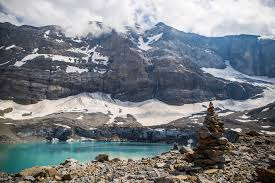
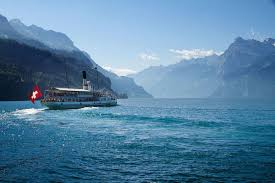
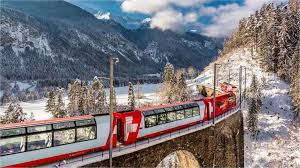

Природа Швейцарии: пейзажи, ландшафты, красивые места
Природа Швейцарии специфична своим многообразием, разместившимся на довольно не большой территории.
Столь разные пейзажи и ландшафты возникли благодаря высоким горам — Швейцарским Альпам.
Климат умеренный, характерная особенность – сильные южные и северные ветры, вызывающие резкие перепады атмосферного давления.
Средняя температура января – 1,5 °C, июля + 17 °C. Значительное влияние на климат страны оказывают горы.
Реки и озера Швейцарии содержат 6 % от запасов пресной воды в Европе.

Достопримечательности
Женевское озеро.
Крупнейшее озеро в Альпах и второе по величине озеро Центральной Европы.
Расположено в границах Швейцарии и Франции.
Фирвальдштетское озеро.
Окружено горами и зелёными ландшафтами, привлекает любителей природы и активного отдыха.

Валюта
Швейцарский франк — официальная валюта Швейцарии и Лихтенштейна.Также франк — законное платёжное средство в итальянском эксклаве Кампионе-д'Италия и в немецком эксклаве Бюзинген-ам-Хохрайн.
Развлечения
Горнолыжный отдых.
В стране есть популярные курорты, где можно покататься на лыжах и сноубордах.
Некоторые из них находятся в кантонах Вале, Ури, Берн и Граубюнден.
Пешие прогулки.
Можно отправиться в путешествие по долине Энгадина или вдоль притоков реки Инн.
В летние месяцы в долине можно увидеть диких швейцарских животных, таких как олени, горные козлы и сурки.
Рафтинг.
Для любителей активного отдыха есть варианты рафтинга по альпийским рекам.
Например, можно сплавиться на надувных плотах по участку Скуоль или ущелью Гиарсун.
Панорамные поезда.
В Швейцарии есть уникальные железнодорожные маршруты, где можно насладиться панорамным видом на пейзажи.
Один из таких маршрутов — «Бернина Экспресс».

Выполнила студентка группы ИСПб-023,
Борисович Ева